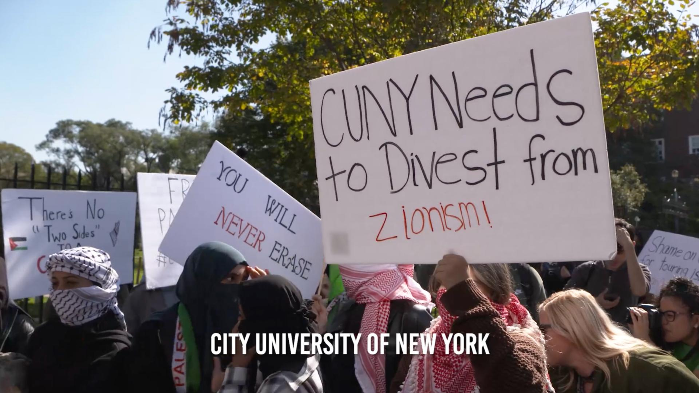
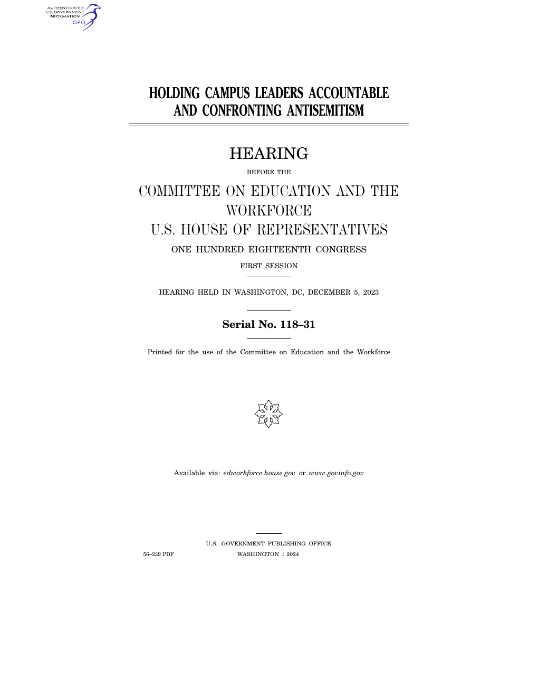
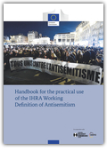
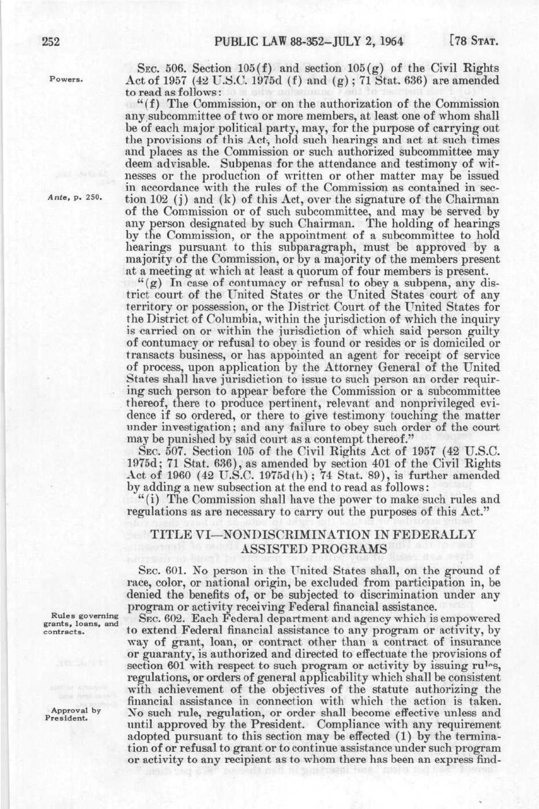

1:35:19 · 5 OPERE
The elephant in the room: the anti-Semitism that has taken over in the universities.
Il filo del discorso
Il contributo presenta un documentario in inglese che accosta interviste, servizi televisivi e audizioni pubbliche. La fonte filmica è identificata con forte probabilità in Blind Spot, realizzato nel 2024 da Seth Kramer, Daniel A. Miller e Jeremy Newberger: il titolo non è pronunciato nei segmenti disponibili, ma durata e successione dei casi coincidono con la documentazione ufficiale.
Leggi la sintesi completaRiduci la sintesi
Il filo conduttore è l’esperienza di studenti ebrei che descrivono esclusione, minacce, timore di mostrarsi e difficoltà nel farsi ascoltare dalle università. Il montaggio collega episodi precedenti al 7 ottobre 2023 e reazioni successive, attraversando George Washington University, Berkeley, Tufts, Notre Dame, Vermont, Tulane, CUNY e Fordham. Le voci hanno prospettive e ruoli diversi: studenti, rappresentanti delle comunità ebraiche, giuristi, amministratori e politici. Le testimonianze di paura sono documenti di esperienza personale; non costituiscono da sole una misura statistica dell’intero sistema universitario. Il film presenta anche esempi di accoglienza e cooperazione, soprattutto attraverso incontri interreligiosi e alleanze fra associazioni studentesche. Una questione ricorrente riguarda il confine fra critica politica e discriminazione. Diversi intervistati considerano il legame con Israele una componente fondamentale della propria identità e contestano esclusioni rivolte a chi si definisce sionista. La scheda conserva questa posizione senza attribuirla a tutti gli ebrei o equiparare automaticamente solidarietà ai palestinesi, critica del governo israeliano, antisionismo e sostegno ad Hamas. La definizione IHRA discussa nel film è non vincolante e richiede attenzione al contesto; include esplicitamente uno spazio per la critica a Israele. La parte giuridica segue denunce, indagini e risposte istituzionali. Il titolo VI del Civil Rights Act offre una tutela contro determinate discriminazioni nei programmi finanziati dal governo federale. Nel caso Vermont l’OCR individuò criticità nella gestione delle segnalazioni e raggiunse un accordo nel 2023. Nel caso George Washington le accuse degli studenti sono affiancate da una revisione commissionata dall’università, che non trovò elementi sufficienti a sostenerle: la contestazione del film non diventa una condanna giudiziaria della docente. Anche la decisione sull’associazione studentesca di Fordham riguarda una controversia specifica e non dichiara antisemita ogni organizzazione per i diritti palestinesi. Il capitolo CUNY intreccia discorsi di laurea, audizioni, proteste e richieste di responsabilità. La disputa su ciò che un’università dovrebbe autorizzare, condannare o proteggere resta distinta dall’accertamento di un illecito. Il finale, con vicende scolastiche e testimonianze successive al 7 ottobre, invita gli studenti a non rinunciare alla propria identità e alla partecipazione. La domanda educativa che emerge riguarda la possibilità di proteggere le persone, ascoltare esperienze differenti e sostenere un confronto politico capace di riconoscere pari diritti senza colpe collettive.
I libri nel discorso

Blind Spot
Identificazione probabile
Note sul riferimento
Copertina: Fotogramma promozionale ufficiale di Blind Spot utilizzato dal Boca International Jewish Film Festival 2025: scena di manifestazione CUNY. Non locandina libraria o filmica con titolo; immagine della fonte filmica specifica.
Immagine autentica tratta dalla fonte indicata; nessuna visione integrale della registrazione o conferma visiva dei titoli proiettati dichiarata.
Riferimento ricavato dalla trascrizione automatica.

Holding Campus Leaders Accountable and Confronting Antisemitism
Identificazione probabile
Note sul riferimento
Frontespizio del verbale · audizione 5 dicembre 2023, stampa GPO 2024: Frontespizio del verbale ufficiale dell’audizione Holding Campus Leaders Accountable and Confronting Antisemitism, 5 dicembre 2023, seriale 118-31. Edizione GPO, Washington, 2024, prima pagina del PDF CHRG-118hhrg56239.
Data dell’audizione 5 dicembre 2023 distinta dall’anno della stampa 2024. Immagine dell’intera prima pagina, non del documentario, di un’audizione CUNY o di altro fascicolo.
A 203,85 s la domanda è rivolta a Magill di Penn; seguono la distinzione speech/conduct, la risposta dipendente dal contesto e le domande a Gay di Harvard. Le risposte corrispondono alle pp. 162–163 del verbale ufficiale, PDF 166–167.

Working Definition of Antisemitism
Note sul riferimento
Copertina: Copertina ufficiale del Handbook for the practical use of the IHRA working definition of antisemitism, Commissione europea / RIAS / IHRA, Ufficio delle pubblicazioni UE 2021, ISBN PDF 9789276284215, DOI 10.2838/72276. Contiene la definizione del 2016: raccolta e commento, non copertina autonoma della definizione.
Immagine autentica tratta dalla fonte indicata; nessuna visione integrale della registrazione o conferma visiva dei titoli proiettati dichiarata.
Riferimento ricavato dalla trascrizione automatica.

Civil Rights Act of 1964, Title VI — Nondiscrimination in Federally Assisted Programs
Note sul riferimento
Copertina: Facsimile integrale di Statutes at Large, volume 78, p. 252 (pagina PDF 12 del Public Law 88-352, 2 luglio 1964): inizio del Title VI, sezioni 601–602, preceduto dal termine del titolo V. Pagina normativa originale, non copertina o frontespizio di un libro.
Immagine autentica tratta dalla fonte indicata; nessuna visione integrale della registrazione o conferma visiva dei titoli proiettati dichiarata.
Riferimento ricavato dalla trascrizione automatica.

Costituzione degli Stati Uniti d’America
Note sul riferimento
Copertina della raccolta: Testo firmato il17settembre1787. Per l’immagine si usa la raccolta Penguin Classics The Federalist Papers, ISBN 9780140444957, che dichiara di includere il testo della Costituzione; non è una fotografia della pergamena originaria.
Copertina autentica di The Federalist Papers: la descrizione editoriale attesta che la raccolta comprende il testo completo della Costituzione. Non è il frontespizio costituzionale del 1787 e Hamilton, Madison e Jay non sono presentati come unici autori del documento.
Riferimento ricavato dalla trascrizione automatica.
Fonti e approfondimenti (21)
- blindspotmovie.com ↗
- edworkforce.house.gov ↗
- gwtoday.gwu.edu ↗
- harvardharrispoll.com ↗
- harvardharrispoll.com ↗
- holocaustremembrance.com ↗
- mediarelations.gwu.edu ↗
- president.gwu.edu ↗
- watch.eventive.org ↗
- cuny.edu ↗
- ed.gov ↗
- ed.gov ↗
- govinfo.gov ↗
- govinfo.gov ↗
- govinfo.gov ↗
- law.cuny.edu ↗
- lawandisrael.org ↗
- nps.gov ↗
- nycbar.org ↗
- nycourts.gov ↗
- youtube.com ↗